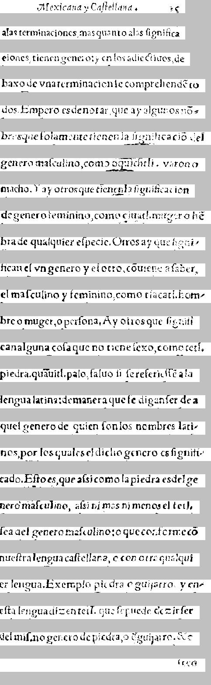

    al extra\~na y Carte|tatur.   re 
    Mexicana y Ca|tellana.  15

 a las terminaciones mas quanto \'a las |ignifica- 
alas terminaciones, mas quanto alas |isgnif\'ica

 ciones tienen g\'eneros, en los antecrictos de- 
eiones, tienen genero: y en los adiectiuos, de

  baxo de vna terminacion |e comprehendero 
baxo de vna terminacion |e comrehend\~e to

 dos Empero es de notar que ay algunos fo- 
dos. Empero es denotar, que ay algunos n\~oƒ-

  bres que |olamente tienen la |ignificacio del 
bres que |olamente tienen la |igna|icaci\~o del

 g\'enero ma|culino, como oquichtli . v atonio 
genero ma|culino, como oquichtli. varon o

 macho. Y ay otros que tienen la |ignificacion 
macho. Y ay otros que tienen la |ignif\'icacion

 de genero reminino, como \cciuatl mag.co |ro 
de genero feminino, como ciuatl. muger o h\~e

 bra de qualquier e|pecto. Otros ay que |igni- 
bra de qualquier e|pecie. Otros ay que |igni-

 fican el vn g\'enero y el otro, contece a |aber, 
f\'ican el vn genero y el otro, c\~ouiene a |aber,

 el ma|culino y feminino, como tlacatl, hom- 
el ma|culino y feminino, como tlacatl. hom-

 bre o muger, o per|ona. A y otros que |ignifi- 
bre o muger,o per|ona. Ay otros que |ignifi

can alguna co|a que no tiene |exo, como tetl, 
can alguna co|a que no tiene |exo, como tetl.

Piedra, quauitl\'apalo |aluo |i |e referie||e a la 
piedra. quauitl. palo, |aluo |i |e referie||\~e a la

lengua latina; de manera que |e digan |er de a- 
lengua latina: de manera que |e digan|er de a

 quel g\'enero de quien |on los nombres lati- 
quel genero de quien |on los nombres lati-

 nos, por los quales el dicho g\'enero es |ignifi- 
nos por los quales el dicho genero es |ignifi-

cado. E|to es, que a||i como la piedra es del g\'e- 
cado. E|to es, que a|si como la piedra es del ge

nero ma|culino, ah\'i ni m\'as ni menos el tetl, 
nero ma|culino, a|si ni mas ni menos el tetl.

|ea del g\'enero ma|culino; oque conforme eo 
|ea del genero ma|culino: o que conforme c\~o

nue|tra lengua ca|tellana, o con otro qualqui- 
nue|tra lengua ca|tellana, o con otra qualqui

er lengua. Exemplo piedra o guijarro y en - 
er lengua. Exemplo, piedra o guijarro. y en-

e|ta lengua, ticentetl, que |e puede decir |er 
e|ta lengua dizen tetl. que |e puede dezir |er

del mi|mo g\'enero de piedra, o guijarro, o 
del mi|mo genero de piedra, o dguijarro. &c

            |eco 
                    Iten


===============================================


    [spanish al extra\~na y ][latin Carte|tatur.   re 
 a ][spanish las terminaciones mas quanto \'a las |ignifica- 
 ciones tienen g\'eneros, en los antecrictos de- 
  baxo de vna terminacion |e comprehendero 
 dos Empero es de notar que ay algunos fo- 
  bres que |olamente tienen la |ignificacio del 
 g\'enero ma|culino, como ][nahuatl oquichtli . v atonio 
][null  [spanish macho. Y ay otros que tienen la |ignificacion 
 de genero reminino, como ][nahuatl \cciuatl mag.co |ro 
 ][spanish bra de qualquier e|pecto. Otros ay que |igni- 
 fican el vn g\'enero y el otro, contece a |aber, 
 el ma|culino y feminino, como ][nahuatl tlacatl, ][spanish hom- 
 bre o muger, o per|ona. A y otros que |ignifi- 
can alguna co|a que no tiene |exo, como ][nahuatl tetl, 
][spanish Piedra, ][nahuatl quauitl\'apalo |aluo ][spanish |i |e referie||e a la 
lengua latina; de manera que |e digan |er de a- 
 quel g\'enero de quien |on los nombres lati- 
 nos, por los quales el dicho g\'enero es |ignifi- 
cado. E|to es, que a||i como la piedra es del g\'e- 
nero ma|culino, ah\'i ni m\'as ni menos el ][nahuatl tetl, 
][spanish |ea del g\'enero ][latin ma|culino; oque conforme eo 
][spanish nue|tra lengua ca|tellana, o con otro qualqui- 
er lengua. ][latin Exemplo ][spanish piedra o guijarro y en - 
e|ta lengua, ][nahuatl ticentetl, ][spanish que |e puede decir |er 
del mi|mo g\'enero de piedra, o guijarro, o 
            |eco 


<table><tr><td>
<font face="courier"> 
</br></br></br></br></br>
</br></br>

    <font color="Red">al extra\~na y </font><font color="Blue">Carte|tatur.   re </br>
 a </font><font color="Red">las terminaciones mas quanto \'a las |ignifica- </br>
 ciones tienen g\'eneros, en los antecrictos de- </br>
  baxo de vna terminacion |e comprehendero </br>
 dos Empero es de notar que ay algunos fo- </br>
  bres que |olamente tienen la |ignificacio del </br>
 g\'enero ma|culino, como </font><font color="Olive">oquichtli . v atonio </br>
</font><font color="Black"> <font color="Red">macho. Y ay otros que tienen la |ignificacion </br>
 de genero reminino, como </font><font color="Olive">\cciuatl mag.co |ro </br>
 </font><font color="Red">bra de qualquier e|pecto. Otros ay que |igni- </br>
 fican el vn g\'enero y el otro, contece a |aber, </br>
 el ma|culino y feminino, como </font><font color="Olive">tlacatl, </font><font color="Red">hom- </br>
 bre o muger, o per|ona. A y otros que |ignifi- </br>
can alguna co|a que no tiene |exo, como </font><font color="Olive">tetl, </br>
</font><font color="Red">Piedra, </font><font color="Olive">quauitl\'apalo |aluo </font><font color="Red">|i |e referie||e a la </br>
lengua latina; de manera que |e digan |er de a- </br>
 quel g\'enero de quien |on los nombres lati- </br>
 nos, por los quales el dicho g\'enero es |ignifi- </br>
cado. E|to es, que a||i como la piedra es del g\'e- </br>
nero ma|culino, ah\'i ni m\'as ni menos el </font><font color="Olive">tetl, </br>
</font><font color="Red">|ea del g\'enero </font><font color="Blue">ma|culino; oque conforme eo </br>
</font><font color="Red">nue|tra lengua ca|tellana, o con otro qualqui- </br>
er lengua. </font><font color="Blue">Exemplo </font><font color="Red">piedra o guijarro y en - </br>
e|ta lengua, </font><font color="Olive">ticentetl, </font><font color="Red">que |e puede decir |er </br>
del mi|mo g\'enero de piedra, o guijarro, o </br>
            |eco </br>
</font></font><br/><br/><br/>
<font color="Black">null</font></br>
<font color="Red">spanish</font></br>
<font color="Blue">latin</font></br>
<font color="Olive">nahuatl</font></br>
</td><td>
</td></tr></table>


CER: 0.12521891418563924
CER, allow f->s: 0.1243432574430823
WER, keep punc: 0.39
WER, keep punc, allow f->s: 0.39
WER, remove punc: 0.295
WER, remove punc, allow f->s: 0.295
